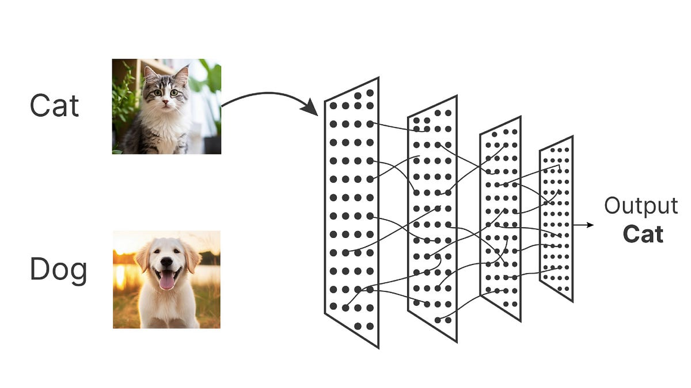
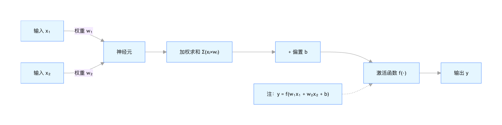
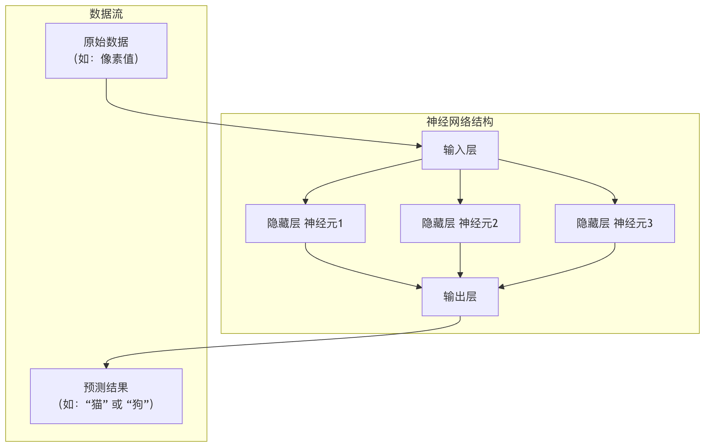
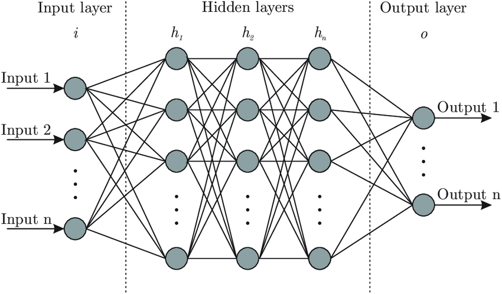

Basic Structure of Neural Networks
In the wave of artificial intelligence, deep learning is undoubtedly the most dazzling star, and what forms the core of deep learning is preciselyneural networks. It mimics the way neurons in the human brain work, and through layer-by-layer connections and computations, it endows machines with the ability to learn and perceive.
For beginners, understanding the basic structure of neural networks is the first key to unlocking the door to deep learning.
This article will take you from scratch, break down the components of neural networks step by step, and use vivid analogies and clear code to help you thoroughly master how they work.
What is a Neural Network? A Vivid Analogy
Imagine you are teaching a child who has never seen cats and dogs to tell them apart. What would you do?
- You might first show him many pictures of cats and dogs.
- You would point out features: Look, cats' ears are usually pointy and their faces are relatively round; dogs' ears may droop and their faces are longer.
- The child's brain (the neural network) will receive these pictures (input data) and your guidance (labels).
- The neurons in his brain will start working, trying to find key patterns that distinguish cats from dogs (such as ear shape and face shape).
- After multiple corrections and learning, a judgment model forms in his brain. Next time he sees a new animal picture, he can confidently say whether it is a cat or a dog.
A neural network is a simplified mathematical model of this child's brain,It is a network system composed of a large number ofartificial neuronsinterconnected with each other, which can automatically learn features and patterns from input data and be used for prediction or decision-making.

Basic Building Blocks of Neural Networks: Neurons
A neuron is the most basic computational unit of a neural network. It simulates a biological neuron'sreceive-signal → process-signal → transmit-signalprocess.
The Workflow of a Neuron
A typical artificial neuron mainly does three things:
Example
def artificial_neuron(inputs, weights, bias):
"""
Simulate the computation process of an artificial neuron.
Parameters:
inputs: list of input signals, e.g., [x1, x2, x3]
weights: list of weights corresponding to each input, e.g., [w1, w2, w3]
bias: bias term, a constant
Returns:
output: the output of the neuron
"""
# 1. Weighted sum: multiply each input by its corresponding weight, then add the bias
weighted_sum = 0
for i in range(len(inputs)):
weighted_sum += inputs[i] * weights[i]
weighted_sum += bias
# 2. Activation function processing: through a nonlinear function, decide whether to "activate" and output the signal
output = activation_function(weighted_sum)
return output
Let's use a diagram and a table to understand it more intuitively:

Detailed explanation of the functions of each neuron component:
| Component | Analogy | Mathematical expression | Function |
|---|---|---|---|
| Input \(x\) | Signal from other neurons | \( x_1, x_2, ..., x_n \) | Receives external information or the output of the previous layer's neurons. |
| Weight \(w\) | Importance of the signal | \(w_1, w_2, ..., w_n\) | Determines the degree to which each input affects the neuron's output.The learning process is the process of continuously adjusting these weights. |
| Bias \(b\) | Activation threshold of a neuron | \(b\) | A constant used to adjust how easily the neuron activates. It can be understood as shifting the weighted sum up or down as a whole. |
| Weighted sum \(z\) | Total signal strength | \(z = (x_1w_1 + x_2w_2 + ... + x_nw_n) + b\) | Synthesizes all input signals. |
| Activation function \(f\) | Switch and processor | \(a = f(z)\) | Introducesnonlinearity. Without it, a multi-layer network would degenerate into a single-layer network and would be unable to learn complex patterns. |
Common Activation Functions
Activation functions bring nonlinear capability to neural networks. Here are the three most commonly used:
Sigmoid
- Formula：\(f(z) = \frac{1}{1 + e^{-z}}\)
- Characteristics: Compresses the input to between (0, 1). Commonly used in the output layer of binary classification problems. Prone to causing the vanishing gradient problem.
- Image: A smooth S-shaped curve.
ReLU (Rectified Linear Unit)
- Formula：\(f(z) = max(0, z)\)
- Characteristics: Simple to compute, effectively alleviates the vanishing gradient problem, and is currently the most commonly used activation function for hidden layers.
- Image: A broken line that turns at the origin; outputs 0 for negative numbers and outputs the original value for positive numbers.
Softmax
- Formula：\(f(z_i) = \frac{e^{z_i}}{\sum_{j=1}^{K} e^{z_j}}\)
- Characteristics: Converts the outputs of multiple neurons into a probability distribution (the sum of all outputs is 1).Specifically used for the output layer of multi-class classification problems.。
The Hierarchical Structure of Neural Networks
A single neuron has limited capability, just as a single brain cell cannot think. When we organize a large number of neurons into layers, a powerful neural network is formed. A typical neural network contains the following three layers:

1. Input Layer
- Role: The senses of the network, responsible for receiving raw data.
- Characteristics: The number of neurons in this layer is usually equal to the number of features in the input data. For example, a 28x28 pixel grayscale image is flattened into 784 features, corresponding to 784 input neurons.The input layer does not perform any computation, it only passes data through.
2. Hidden Layer
Role: The brain of the network, responsible for complex feature extraction and transformation.
Characteristics：
- Located between the input layer and the output layer, and can have one or more layers (this is where deep learning gets its name).
- Each layer's neurons receive the outputs of all neurons in the previous layer as input, compute their own outputs, and pass them to the next layer (this is called full connection).
- Neurons in the hidden layer use activation functions such as ReLU to introduce nonlinearity.
3. Output Layer
Role: The decision-maker of the network, outputs the final prediction result.
Characteristics: The number of neurons is determined by the task.
- Binary classification: 1 neuron (using Sigmoid) or 2 neurons (using Softmax).
- Multi-class classification (K classes): K neurons (using Softmax).
- Regression(predicting a continuous value): 1 neuron (usually without an activation function).

Demo diagram:
Hands-on: Build a Neural Network with Python
No matter how much theory you talk about, it's better to practice. Below we useNumPya library to build the simplest three-layer neural network (1 hidden layer) from scratch, and perform a forward propagation calculation.
Example
"""Sigmoid activation function"""
def sigmoid(x):
"""ReLU activation function"""
return 1 / (1 + np.exp(-x))
def relu(x):
# Initialize a simple neural network
return np.maximum(0, x)
Initialize network weights and biases.
def initialize_network(input_size, hidden_size, output_size):
"""
Parameters:
input_size: number of neurons in the input layer
hidden_size: number of neurons in the hidden layer
output_size: number of neurons in the output layer
Returns:
network: dictionary containing parameters for each layer
# Set the random seed to ensure consistent results on every run
"""
np.random.seed(42) # Initialize parameters for input layer -> hidden layer
network = {}
# Weight matrix shape: (number of neurons in the next layer, number of neurons in the previous layer)
# The bias is a column vector
network['W1'] = np.random.randn(hidden_size, input_size) * 0.01
network['b1'] = np.zeros((hidden_size, 1)) # Initialize parameters for hidden layer -> output layer
# Forward propagation function
network['W2'] = np.random.randn(output_size, hidden_size) * 0.01
network['b2'] = np.zeros((output_size, 1))
return network
Perform forward propagation to compute the network output.
def forward_propagation(network, X):
"""
Parameters:
network: dictionary containing weights and biases
X: input data, shape (number of features, number of samples)
Returns:
y_pred: network prediction output
cache: cached intermediate results (for subsequent backpropagation)
# Get parameters
"""
# 获取参数
W1, b1, W2, b2 = network['W1'], network['b1'], network['W2'], network['b2']
# Layer 1 computation: input layer -> hidden layer
Z1 = np.dot(W1, X) + b1 # Weighted sum
A1 = relu(Z1) # Through ReLU activation function
# Layer 2 computation: hidden layer -> output layer
Z2 = np.dot(W2, A1) + b2 # Weighted sum
A2 = sigmoid(Z2) # Through Sigmoid activation function (assuming binary classification)
# Cache intermediate results for use in backpropagation
cache = {'Z1': Z1, 'A1': A1, 'Z2': Z2, 'A2': A2}
return A2, cache
# --- Let's run it! ---
# 1. Define network structure: 2 input features, 3 hidden neurons, 1 output (binary classification)
input_size = 2
hidden_size = 3
output_size = 1
# 2. Initialize the network
my_network = initialize_network(input_size, hidden_size, output_size)
print("Shape of weights W1 (hidden layer x input layer):", my_network['W1'].shape)
print("Shape of bias b1:", my_network['b1'].shape)
print("Shape of weights W2 (output layer x hidden layer):", my_network['W2'].shape)
# 3. Create a sample input data (2 features, 1 sample)
# In X, columns represent samples, rows represent features
X_sample = np.array([[1.5], [-0.5]]) # Shape (2, 1)
print("\nInput data X:", X_sample.T) # .T is used to transpose for easier printing
# 4. Perform forward propagation
y_pred, cache = forward_propagation(my_network, X_sample)
print("\nNeural network predicted output (A2):", y_pred)
# If output > 0.5, we consider it class 1, otherwise class 0
predicted_class = 1 if y_pred > 0.5 else 0
print(f"Predicted class: {predicted_class}")
Code explanation and output analysis:
Initialization: We created a 2-3-1 network structure.W1It is a 3x2 matrix, representing the connection weights from 2 inputs to 3 hidden neurons.
Forward propagation：
- Input
[1.5, -0.5]first withW1multiplied and added tob1, yielding the weighted sum of the hidden layerZ1。 Z1After the ReLU function, get the activation values of the hidden layerA1。A1Then withW2multiplied and added tob2, yielding the weighted sum of the output layerZ2。Z2Finally, through the Sigmoid function, it is compressed to (0,1) as the final predicted probabilityA2。
Output: Because the weights are randomly initialized, the predicted output of this untrained networkA2is also a random value (close to 0.5).The purpose of training a neural network is to repeatedly adjust, through large amounts of data,W1, b1, W2, b2, so thatA2it can produce meaningful predictions for different inputs.
Summary of Core Concepts and Learning Path
Through this article, you have mastered the cornerstones of neural networks:
| Concept | Key Points |
|---|---|
| Neuron | A computational unit that performs加权求和 -> 加偏置 -> 激活函数。 |
| Weights and Biases | Core parameters that the model needs to learn; they determine the behavior of the network. |
| Activation Function | Introduces non-linearity (e.g., ReLU, Sigmoid), enabling the network to learn complex relationships. |
| Network Layers | Input layer(receives data),hidden layer(feature extraction),output layer(produces predictions). |
| Forward Propagation | The process of data flowing from the input layer to the output layer to compute predicted values. |
Your next learning steps:
- Loss Function: How to quantify how well the network predicts (e.g., mean squared error, cross-entropy loss)?
- Backpropagation and Gradient Descent: How does a neural network automatically adjust weights and biases based on the degree of "badness" (this is the essence of learning)?
- Hands-on with Frameworks: Use
TensorFlow或PyTorchand other modern frameworks, you can easily build and train more complex networks, without writing from scratchNumPycode.
Once you understand the basic structure, you will find that all complex deep learning models (such as CNN for images, RNN for speech) evolve from this basic structure by changing the connection patterns of neurons and layer functions. Now, you have a map to continue exploring the vast world of deep learning.
Other Extensions Linux Command Encyclopedia
Linux Command Encyclopedia
Click to share notes
<p style="font-size:14px;">The note must be an extension of this article's content!</p><br> <p style="font-size:12px;"><a href="../tougao.html" target="_blank">Article submission, click here</a></p> <p style="font-size:14px;"><a href="../w3cnote/runoob-user-test-intro.html" target="_blank">How to get a registration invitation code</a></p> <h3 class="text-muted"><i class="fa fa-info-circle" aria-hidden="true"></i> You must <a href=";.html" class="runoob-pop">log in</a> before sharing notes!</h3> <p><a href="../w3cnote/runoob-user-test-intro.html" target="_blank">How to get a registration invitation code</a></p>